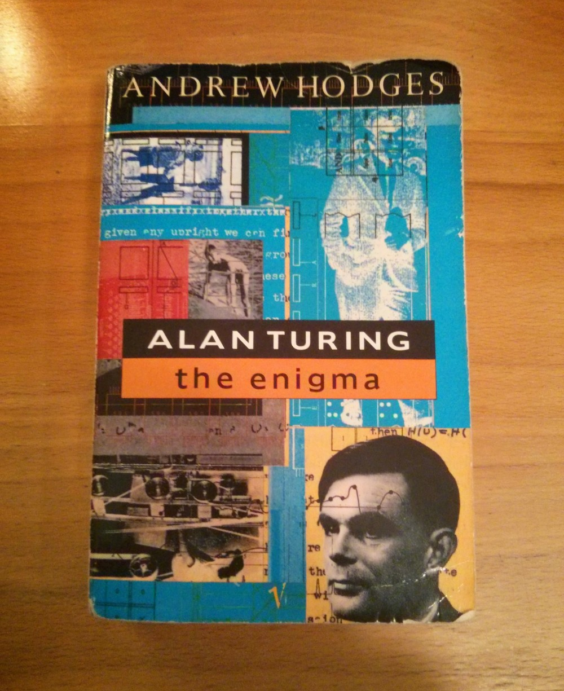
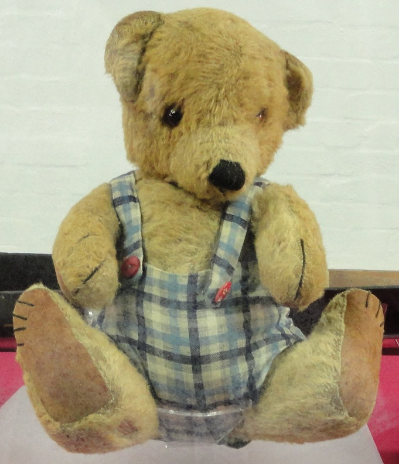

I always carry a book in my backpack so I have something to do while sitting on the bus, the subway or in a waiting room. It took me almost a year to read this one, but I was determined to get through it. I wanted to know more about the mythical figure that is Alan Turing, often cited as the father of computer science. I'll begin by saying that Alan Turing: The Enigma is a remarkably well-researched book, with all references provided for the reader. It's obvious that many years of work went into its making. The author, Andrew Hodges, is a mathematician, which makes him particularly well-placed to discuss the many creative ideas of Alan Turing.
The book of course discusses in detail Alan Turing's seminal On Computable Numbers paper, as well as his involvement in the breaking of German cryptography (and the Enigma machine) during World War II, but also paints a very intimate and human picture of Alan Turing, a picture which includes character flaws and vulnerabilities. Alan Turing was an introvert, a man of few friends, stubborn, often dismissive, and probably quite lonely at times. He seems to have struggled to understand societal norms, and had the boldness (or perhaps foolishness) to be quite open about his homosexuality decades before it became acceptable to do so. His eventual fall from grace is a cruel tragedy which he never saw coming.

This book also reveals many interesting facts about Turing's life. Contrarily to what I had assumed based on my introduction to Turing Machines in computer science classes, Alan Turing was not just a pure theoretical mathematician. He was also interested in relativity and quantum physics. He dabbled in chemistry as a hobby. He understood electronics well enough to design complex analog circuits, and was capable of using a soldering iron to assemble them as well. Alan Turing also had a crucial role in the design of an actual digital computer: the ACE (Automatic Computing Engine). Finally, while working at the University of Manchester, Turing had the opportunity to program a working computer to test theories about morphogenesis (his last published works) in simulations.
I would recommend this book to anyone who's curious to know more about Alan Turing, or just interested in reading a good biography. If you're cheap like me, you can acquire this book used on Amazon or AbeBooks for only a few dollars after shipping.
{kind=link}